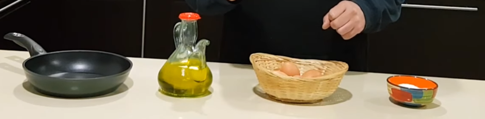
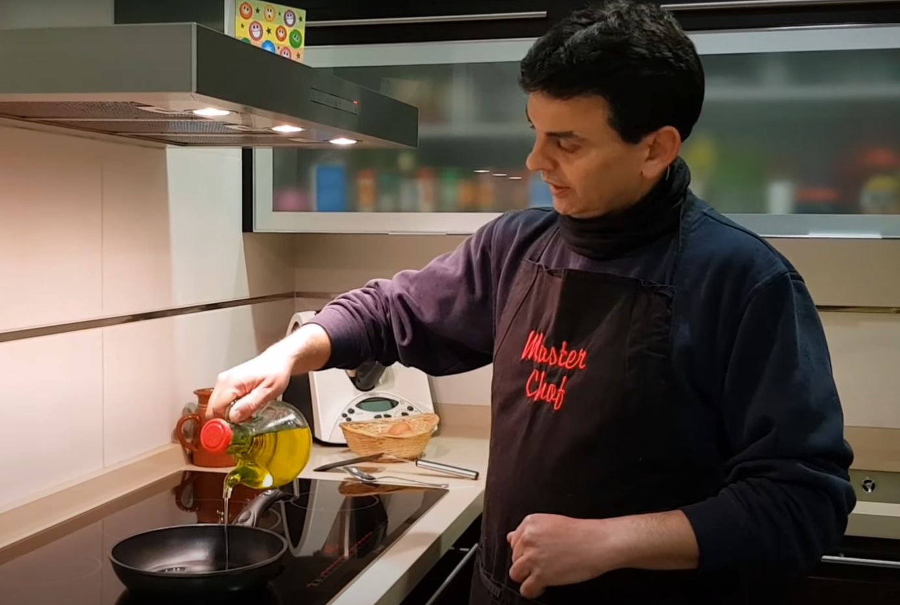
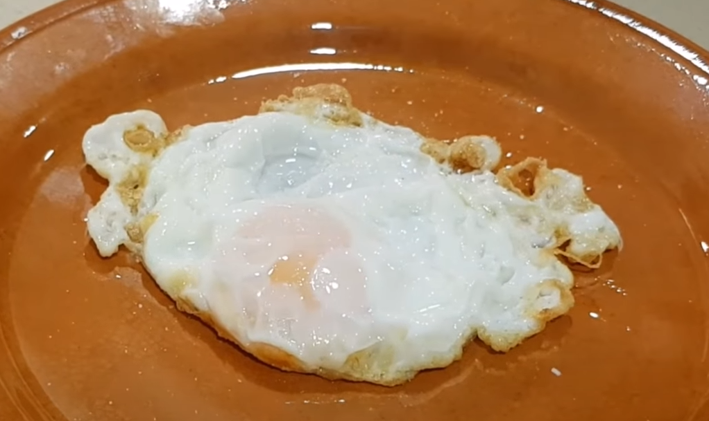

La receta primigenia
🍳Huevos fritos🍳
- Pilla una buena sarten lavada y dos huevitos
- Pon mantequilla o aceite a calentar durante 1 min a fuego medio

- Cuando este bien ropme los huevos en la sarten (recuerda que no se rompan)

- Despues de 5 minutos saca los huevos
- Ponle aceite al gusto y a disfrutar
